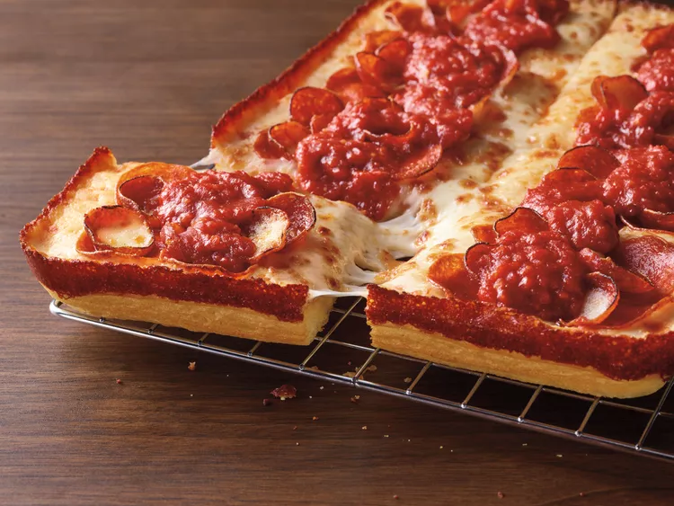

Pizza

What this pizza lacks in Frank's RedHot®, chicken, blue cheese, and celery, it more than makes up for by being a really great pepperoni pizza.
I might add, since it doesn't include those things,
it's perfect to serve alongside Buffalo chicken wings—you know,
at a Super Bowl party, or something similar.
Ingredients For The Sauce
- 1 tablespoon extra-virgin olive oil
- 1 (6 ounce) can tomato paste
- 1 teaspoon garlic powder
- 1 teaspoon onion powder
- ¼ teaspoon red pepper flakes
- ½ teaspoon dried basil
- ½ teaspoon dried oregano
- 1 teaspoon kosher salt
- 2 teaspoons white sugar
- 2 cups water
Ingredients For The Pizza
- 1 tablespoon olive oil, or as needed
- 1 (14 ounce) package refrigerated pizza dough
- 1 pound low-moisture mozzarella cheese
- 3 ½ ounces thick pepperoni slices